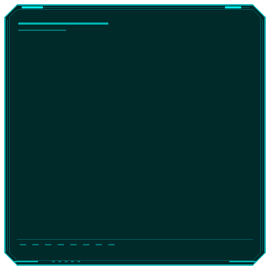
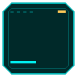

GAMEGOGO / SANABI REFERENCE STUDY / 2026.09.27
게임 화면에서 보는
UI · FX 시안
산나비 UI의 색, 각진 형태, 계기판 선을 참고해 새로 그린 콘셉트입니다. 원본 게임 이미지는 이 결과물에 포함하지 않았습니다.
UI PNG 11FX SET 04STATUS CONCEPT
01 / IN-GAME MOCKUP
게임 화면에서 조합 보기
배경은 이전 파일럿의 생성 이미지입니다. 메뉴와 HUD는 시각 검수용 배치입니다.
01 PLAYER STATUSHP / 076
CORE ACTIVE /// FIELD 07
MISSION CONTROL // 07
작전 선택
시안용 게임 메뉴

G엔진 삽입이나 조작 테스트를 마친 화면은 아닙니다. UI 원본은 아래 PNG 카드에서 열 수 있습니다.
02 / UI ASSETS
상태별 PNG 원본
각진 실루엣, 청록 선, 제한된 강조색으로 만든 시안입니다. 이미지를 누르면 투명 PNG를 엽니다.
03 / FX MOTION
이펙트 프레임 검수
기존 생성 FX 네 종류를 재생합니다. UI 방향에 맞춘 FX 스타일 조정은 이후 검수 항목입니다.
01 / 08
배경
04 / HUMAN REVIEW
눈으로 본 의견 남기기
평가와 메모는 브라우저에 임시 저장됩니다. JSON으로 내려받아 공유할 수 있습니다.
이 화면은 콘셉트입니다. 승인 전에는 게임 자산으로 승격하지 않습니다.